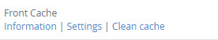
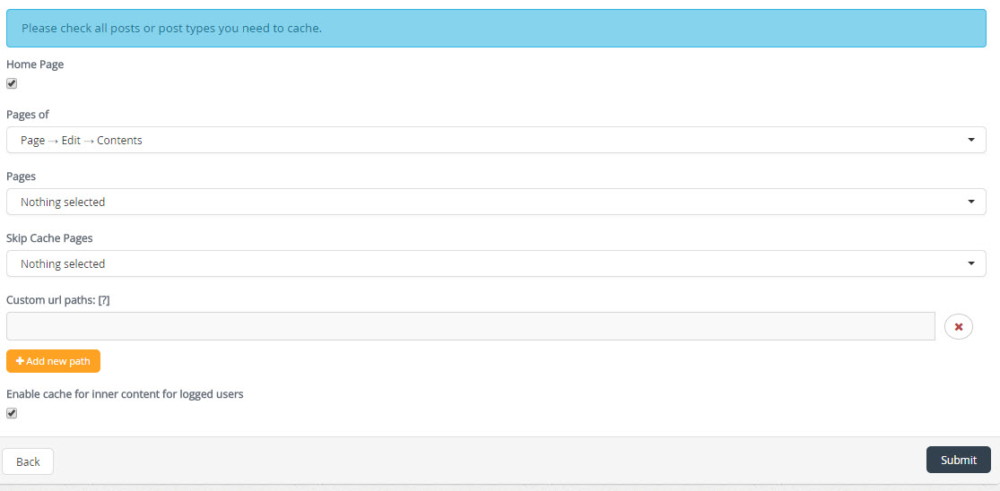

| Description |
|---|
|
When someone visits one of your pages, they have to apply a lot of information from your web host.
They have to submit a request for images, Javascript and CSS. They also need to retrieve content from the database.
All this contributes to its overall load time of the page.
Front Cache plugin helps optimize your website loading times of the page. |
| Configuration | |
|---|---|
|  | After activating the plugin, select the link "Settings/Configuración" to edit the characteristics of the plugin. |
|  |
Frontend cache pages, allows you to save the data in cache memory different data types or sections such as:
Also can be placed n routes Custom url paths to save them to cache, by clicking on the Add new path We can also have the option to save the contents of data cached users Enable cache for inner content for logged users |